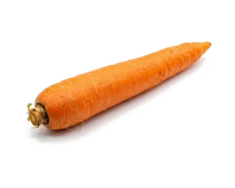
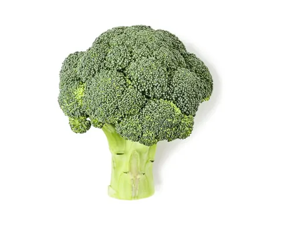

In short
- Start with smooth purees, then gradually move to lumpier textures and soft pieces.
- Offer iron-rich foods early, and common allergens one at a time.
- Follow your baby's cues, and keep meals low-pressure.
Starting solids
Starting solid foods is one of the most exciting milestones in your baby's first year. Moving from breast milk or formula to solid foods is a gradual journey of development, taste exploration and new textures.
Breast milk or formula is still your baby's main source of nutrition until 12 months. In the beginning, solids are about practice and discovery, not filling your baby up.
Is your baby ready? Look for the signs
Most babies are ready for solids at about 6 months. Starting before 4 months isn't recommended. Watch your baby, not just the calendar, for these signs:
- Good head and neck control: they can hold their head steady and upright on their own.
- Sitting up with little support in a high chair or supported seat.
- The tongue-thrust reflex has faded: they keep food in their mouth instead of pushing it straight back out with their tongue.
- Active interest in food: watching you eat, reaching for your plate, or opening their mouth when food comes near.
- Growing well: many babies have about doubled their birth weight by this stage.
- Talk to your pediatrician about when to start, especially if your baby was born early.
Week 1: Smooth purees
Texture: completely smooth and runny, like single-ingredient iron-fortified baby cereal, smooth avocado, or steamed and blended sweet potato.
Goal: practice, not volume. Offer 1 to 2 small spoonfuls once a day, after a milk feed. Your baby is learning how to move food around their mouth and swallow it.
Week 2: Thicker purees and new flavors
Texture: slightly thicker purees that cling to the spoon, like yogurt or applesauce. You can start mixing flavors, such as pear with spinach.
Goal: keep introducing new single-ingredient vegetables and fruits. This is also a good time to start offering common allergens, like peanut butter thinned with water, breast milk or formula, or well-cooked egg, one at a time, with a few days between each new one so you can watch for a reaction.
If your baby has severe eczema or an egg allergy, talk to your pediatrician before offering peanut.
Week 3: Lumpy and mashed textures
Texture: lumpy purees or foods mashed with a fork, with small soft lumps, like mashed banana, fork-mashed avocado, or well-cooked oatmeal.
Goal: encourage your baby to move their tongue and mash food against the roof of their mouth, instead of just swallowing.
Week 4 and beyond: Soft pieces and finger foods
Texture: soft, finely chopped foods, small soft pieces, or easy-to-grab finger foods, like well-cooked carrot sticks, soft broccoli florets, or strips of tender chicken.
Goal: move toward family meals. Let your baby feed themselves and explore different shapes, temperatures and textures.
Every baby moves at their own pace. If your baby isn't ready for the next texture yet, stay where they're comfortable for a little longer and try again in a few days.
- Pediatric guidance suggests finger foods soft enough to squash easily between your fingers.
- Always stay with your baby and make sure they're sitting upright while they eat.
- Avoid hard, round or sticky foods that are choking risks, like whole grapes, nuts, popcorn and raw carrots.
Tips for success
- Follow your baby's cues. Turning away, leaning back or closing their mouth means "I'm full." Leaning forward or opening wide means "More, please!"
- Iron is key. From about 6 months, your baby needs more iron than breast milk alone provides. Offer iron-rich foods early, like pureed meats, iron-fortified cereals or mashed beans.
- Keep meals low-pressure. Mess is part of learning! Let your baby touch, smell and smear their food.
- No honey before 12 months, and no cow's milk as a drink before 12 months.
Foods in this article
- Sweet potato

Carrot
Broccoli Spinach
Spinach
How to serve each one at every age is in the app's food guide.
Ages are a guide
Ages like 6, 7 or 9 months are general guidelines, not deadlines. Every baby gets there at their own pace. Before starting solids, look for signs of readiness, such as sitting up with little support and good head control, and talk to your pediatrician about your baby's needs.
Sources
- When, What, and How to Introduce Solid Foods · CDC
- When Can Babies Start Solid Foods? · AAP (HealthyChildren.org)
- Tastes and Textures · CDC
- Iron · CDC
- When to Introduce Egg, Peanut Butter & Other Common Food Allergens · AAP (HealthyChildren.org)
- Choking Hazards · CDC
- Signs Your Child Is Hungry or Full · CDC
All articles, recipes, guides, tips and chat answers in Mama & Baby Bites are for general information and education only. They are not medical, pediatric or nutritional advice, and they don't replace care from a qualified professional. In an emergency, call 911.